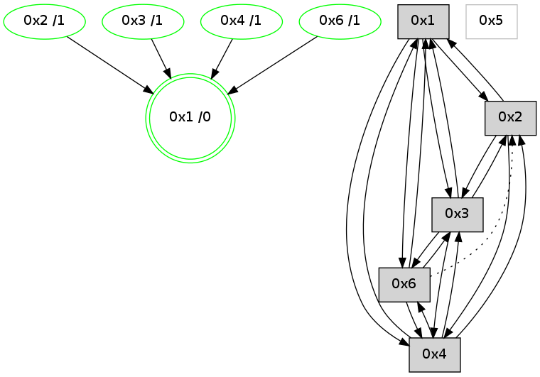

>> << IDX [start] -100 -25 -5 +0 +5 +25 [1220.35444713]
 Previous packets
----------------------------------------------------------------------
1215.331917 beacon01(adaf) #0 coord=01,02,05,03,04,06 cycle=944.0ms assoc
-- color-indic=0 64 a4 6e
1215.341877 beacon02(adaf) #0 coord=01,02,05,03,04,06 cycle=944.0ms assoc 64 f5 91
1215.351878 beacon05(adaf) #0 coord=01,02,05,03,04,06 cycle=944.0ms assoc 64 53 bb
1215.361880 beacon03(adaf) #0 coord=01,02,05,03,04,06 cycle=944.0ms assoc 64 cf 9f
1215.371879 beacon04(adaf) #0 coord=01,02,05,03,04,06 cycle=944.0ms assoc 64 69 b5
1215.393355 [Hello(6): seq=895 sym=4,3,1 asym=2 color=3 sysInfo=hasWarning,MaxColorIndicationCalled,ColoringModeIndicationCalled,MaxColorResponseCalled stat=4:12,5,10,1/3:12,0,3,1/1:5,13,9,0/2:1,0,1,0]
1215.397227 [Hello(2): seq=1467 sym=3,1,4 color=13 sysInfo=hasWarning,MaxColorIndicationCalled,ColoringModeIndicationCalled,MaxColorResponseCalled stat=3:2,0,3,1/1:12,7,15,0/4:8,0,5,0]
----------------------------------------------------------------------
1216.336421 beacon01(adaf) #0 coord=01,02,05,03,04,06 cycle=944.0ms assoc
-- color-indic=0 64 e8 de
1216.346382 beacon02(adaf) #0 coord=01,02,05,03,04,06 cycle=944.0ms assoc 64 b9 21
1216.356382 beacon05(adaf) #0 coord=01,02,05,03,04,06 cycle=944.0ms assoc 64 1f 0b
1216.366384 beacon03(adaf) #0 coord=01,02,05,03,04,06 cycle=944.0ms assoc 64 83 2f
1216.376383 beacon04(adaf) #0 coord=01,02,05,03,04,06 cycle=944.0ms assoc 64 25 05
1216.386383 beacon06(adaf) #0 coord=01,02,05,03,04,06 cycle=944.0ms assoc 64 51 19
1216.398098 [Hello(4): seq=979 sym=2,1,3,6 sysInfo=hasWarning stat=2:6,0,1,0/1:5,11,0,0/3:6,0,7,1/6:11,0,5,0]
1216.401832 [Hello(1): seq=883 sym=2,4,6,3 color=0 sysInfo=hasWarning,MaxColorIndicationCalled,MaxColorResponseCalled,MaxColorRequestCalled,ColoringModeRequestCalled stat=2:10,3,7,0/4:5,0,3,0/6:7,2,12,0/3:4,0,4,1]
----------------------------------------------------------------------
1217.340931 beacon01(adaf) #0 coord=01,02,05,03,04,06 cycle=944.0ms assoc
-- color-indic=0 64 2c b1
1217.350891 beacon02(adaf) #0 coord=01,02,05,03,04,06 cycle=944.0ms assoc 64 7d 4e
1217.360892 beacon05(adaf) #0 coord=01,02,05,03,04,06 cycle=944.0ms assoc 64 db 64
1217.370892 beacon03(adaf) #0 coord=01,02,05,03,04,06 cycle=944.0ms assoc 64 47 40
1217.390892 beacon06(adaf) #0 coord=01,02,05,03,04,06 cycle=944.0ms assoc 64 95 76
1217.402578 [Hello(2): seq=1468 sym=3,1,4 color=13 sysInfo=hasWarning,MaxColorIndicationCalled,ColoringModeIndicationCalled,MaxColorResponseCalled stat=3:2,0,3,1/1:13,7,15,0/4:8,0,5,0]
----------------------------------------------------------------------
1218.345436 beacon01(adaf) #0 coord=01,02,05,03,04,06 cycle=944.0ms assoc
-- color-indic=0 64 54 1c
1218.355397 beacon02(adaf) #0 coord=01,02,05,03,04,06 cycle=944.0ms assoc 64 05 e3
1218.365397 beacon05(adaf) #0 coord=01,02,05,03,04,06 cycle=944.0ms assoc 64 a3 c9
1218.375399 beacon03(adaf) #0 coord=01,02,05,03,04,06 cycle=944.0ms assoc 64 3f ed
1218.385399 beacon04(adaf) #0 coord=01,02,05,03,04,06 cycle=944.0ms assoc 64 99 c7
1218.395397 beacon06(adaf) #0 coord=01,02,05,03,04,06 cycle=944.0ms assoc 64 ed db
1218.407097 [Hello(3): seq=981 sym=6,2,1,4 color=2 sysInfo=hasWarning,MaxColorIndicationCalled,ColoringModeIndicationCalled,MaxColorResponseCalled stat=6:2,0,4,0/2:3,0,2,0/1:6,15,15,1/4:10,10,6,1]
1218.409826 [Hello(1): seq=884 sym=2,4,6,3 color=0 sysInfo=hasWarning,MaxColorIndicationCalled,MaxColorResponseCalled,MaxColorRequestCalled,ColoringModeRequestCalled stat=2:11,3,7,0/4:5,0,3,0/6:7,2,12,0/3:4,0,4,1]
1218.412027 [STC(1) #0.218 new-neigh,tree-change,inconsistent-stability,stable,to-color d=0]
----------------------------------------------------------------------
1219.349942 beacon01(adaf) #0 coord=01,02,05,03,04,06 cycle=944.0ms assoc
-- color-indic=0 64 90 73
1219.359905 beacon02(adaf) #0 coord=01,02,05,03,04,06 cycle=944.0ms assoc 64 c1 8c
1219.369903 beacon05(adaf) #0 coord=01,02,05,03,04,06 cycle=944.0ms assoc 64 67 a6
1219.379904 beacon03(adaf) #0 coord=01,02,05,03,04,06 cycle=944.0ms assoc 64 fb 82
1219.389903 beacon04(adaf) #0 coord=01,02,05,03,04,06 cycle=944.0ms assoc 64 5d a8
1219.399905 beacon06(adaf) #0 coord=01,02,05,03,04,06 cycle=944.0ms assoc 64 29 b4
1219.411444 [STC(3)->1 #0.218 new-neigh,tree-change,inconsistent-stability,stable,to-color d=1]
1219.415480 [Hello(2): seq=1469 sym=3,1,4 color=13 sysInfo=hasWarning,MaxColorIndicationCalled,ColoringModeIndicationCalled,MaxColorResponseCalled stat=3:3,0,3,1/1:14,7,0,0/4:8,0,5,0]
1219.417565 [Hello(4): seq=980 sym=2,1,3,6 sysInfo=hasWarning stat=2:7,0,1,0/1:7,11,1,0/3:7,0,7,1/6:11,0,5,0]
1219.419379 [STC(6)->1 #0.218 new-neigh,tree-change,inconsistent-stability,stable,to-color d=1]
1219.420692 [STC(4)->1 #0.218 new-neigh,tree-change,inconsistent-stability,stable,to-color d=1]
1219.422805 [STC(2)->1 #0.218 new-neigh,tree-change,inconsistent-stability,stable,to-color d=1]
1219.426316 [TreeStatus(4)-.->1 #0.218 new-neigh,tree-change,inconsistent-stability,stable child=1]